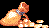

| 메인 매뉴 | | | 무기류 | | | 장비류 | | | 도구류 | | | 보석류&기타 | | | 상점 정보 |
| 전설의 검 풀기 | | | LB오일 정보 | | | 상자 정보 | | | 아이템 콜렉션 |

| 포션류 | | | 스크롤류 | | | 돈(sp) |
| ※ 이곳에 나오는 아이템들은 전부 슬라이딩으로 입수가 가능합니다. |
주로 놀(gnoll)들이 떨구는 점수 아이템입니다. 시프로 고블린에게 픽 포켓 시도시 나오기도 합니다. 스코어 어택시 상자에서 랜덤 아이템이 이것으로 떨어지면 허무해지기도 합니다. |
상자와 리치 이후의 보스에게서 얻을 수 있으며 스코어 어택에 있어서 중요한 점수 아이템 중 하나 입니다. 시프가 상자를 열면 나오는 경우가 꽤 많습니다. |
| Garnet - 석류석 (점수 : 100xp) 상자에서 나오기도 하고 구울, 혈거인(triglodyte)이 떨구기도 하는 점수 아이템 입니다. |
| Amber - 호박 (점수 : 100xp) 석류석과 색만 다른 점수 아이템. |
| Diamond - 금강석 (점수 : 10000xp) 게임상에서 가장 높은 점수를 자랑하며 스코어 어택시에 이것이 나오면 그보다 기쁠 수가 없는 점수 아이템입니다. 상자와 일부 보스, 가고일에게서 얻을 수 있습니다. 참고로 전작 TOD에서 가장 높은 점수 아이템은 티아라(tiara)로 20000xp였습니다. |
푸른색이 보석답다는 느낌을 들게 하는 점수 아이템. 상자와 보스, 아울베어, 셰도우 엘프에게서 얻을 수 있으며 시프의 경우 고블린에게 픽 포켓을 시도해서 얻을 수도 있습니다. 항상 플레이어를 짜증나게 만드는 고블린이지만 이것을 떨굴 때 만큼은 이뻐보이기도... |
상자와 보스, 헬 하운드에게서 얻을 수 있으며 시프의 경우 고블린에게 픽 포켓을 시도해서 얻을 수도 있습니다. |
| Emerald - 에메랄드 (점수 : 5000xp) 상자와 리치 이후의 보스에게서 얻을 수 있으며 스코어 어택에 있어서 중요한 점수 아이템 중 하나 입니다. 시프가 상자를 열면 나오는 경우가 꽤 많습니다. |
놀(Gnoll)이 주로 떨구며 상자에서 나오기도 하고 고블린에게 픽 포켓 시도시 나오기도 합니다. |
1000xp짜리의 경우 헬 하운드와 가고일, 보스에게서 얻을 수 있고 2000xp는 가고일, 보스에게서 얻을 수 있습니다. 4000xp짜리의 경우 꽤나 보기 힘듭니다. 약간 기울어진 것과 펼쳐진 것에 어떤 가치 차이가 있는지 약간 의문. |
| Perfume - 향수 (점수 : 5000xp) 상자와 보스에게서 얻을 수 있으며 루비, 에메랄드와 함께 스코어 어택에 중요한 점수 아이템입니다. |
| Sculture - 조각상 (점수 : 2500xp) 상자와 가고일에게서 얻을 수 있으며 의외로 조금 보기 힘든 점수 아이템입니다. |
| Healing Potion - 회복 포션 효과 : HP 20 회복 보통 상자에서 나오거나 상점에서 구입하지만 가끔 바닥에 놓여 있는 경우도 있고 몇몇 보스가 떨구기도 합니다. 다른 아이템들은 시간이 흐르면 사라지지만 회복 포션은 절대로 사라지지 않습니다. |
효과 : 아이템 사용과 주문 시전을 제외한 모든 행동의 속도증가 (약 6초 지속) 상자에서 얻을 수 있습니다. D.비스트에게 픽 포켓 시도시 나오기도 합니다. 다른 아이템에 비해 사라지는 시간이 늦습니다. |
효과 : 착용무기의 데미지 약 25%증가 (약 12초 지속) 상자에서 얻을 수 있으며 가끔 바닥에 놓여있기도 합니다. 다크 워리어2에게 픽 포켓 시도시 얻을 수도 있습니다. 다른 아이템에 비해 사라지는 시간이 늦습니다. |
| Diminution Potion - 축소 포션 효과 : 신체크기가 축소 키메라를 격파 후 놈 상인이 플레이어 캐릭터의 몸이 커서 문제가 있다며 포션을 사겠냐고 묻는데 그 포션이 바로 이 포션입니다. 구입을 한다해도 실제로 돈이 소비되지는 않습니다. 놈 마을을 벗어남과 동시에 효과가 사라집니다. |
| Key - 열쇠 잠겨있는 상자를 시프 이외의 클래스도 열 수 있게 해주는 아이템입니다. 최대 9개까지 보유 가능하며 플레이어 별로 보유하는게 아니라 공통으로 보유합니다. 보유 수량은 화면의 좌측 상단에 표시 됩니다. 다른 아이템에 비해 사라지는 시간이 늦습니다. |
| 1레벨 스크롤 1레벨 주문의 주문량을 1회 늘려 줍니다. 해당 주문 - 매직 유저, 엘프의 매직 미사일 |
| 2레벨 스크롤 2레벨 주문의 주문량을 1회 늘려 줍니다. 해당 주문 - 클레릭의 블레스(Bless) / 홀드 퍼슨(Hold Person) - 엘프의 인비지빌리티(Invisibility) |
| 3레벨 스크롤 3레벨 주문의 주문량을 1회 늘려 줍니다. 해당 주문 - 클레릭의 스트라이킹(Striking) / 컨티뉴얼 라이트(Continual Light) - 매직 유저의 파이어 볼(Fire Ball) / 라이트닝 볼트(Lightning Bolt) - 엘프의 파이어 볼(Fire Ball) / 라이트닝 볼트(Lightning Bolt) / 헤이스트(Haste) |
| 4레벨 스크롤 4레벨 주문의 주문량을 1회 늘려 줍니다. CSW때문에 오락실에선 클레릭이 독차지 하기도... 해당 주문 - 클레릭의 CSW(Cure Serius Wounds) / 스틱 투 스네이크(Stick to Snake) - 매직 유저의 아이스 스톰(Ice Storm) / 월 오브 파이어(Wall of Fire) - 엘프의 아이스 스톰(Ice Storm) / 폴리모프 오더(Polymorph Other) |
| 5레벨 스크롤 5레벨 주문의 주문량을 1회 늘려 줍니다. 역시 CCW때문에 오락실에선 클레릭이 독차지 하기도... 해당 주문 - 클레릭의 CCW(Cure Critical Wounds) / 인섹트 플레이그(Insect Plague) - 매직 유저의 컨주어 엘리멘탈(Conjure Elemental) / 클라우드 킬(Cloud Kill) - 엘프의 컨주어 엘리멘탈(Conjure Elemental) |
| 6레벨 스크롤 6레벨 주문의 주문량을 1회 늘려 줍니다. 해당 주문 - 매직 유저의 플래쉬 투 스톤(Flesh to Stone) / 프로젝티드 이미지(Projected Image) |
| 7레벨 스크롤 7레벨 주문의 주문량을 1회 늘려 줍니다. 해당 주문 - 클레릭의 홀리 워드(Holy Word) / 어스 퀘이크(Earth Quake) - 매직 유저의 리버스 그래비티(Reverse Gravity) |
| 8레벨 스크롤 8레벨 주문의 주문량을 1회 늘려 줍니다. 그러나 게임상에서 8레벨 주문은 존재하지 않습니다. 한마디로 전혀 쓸모가 없는 스크롤. ※ 각 스크롤은 파티내에 매직 유저, 클레릭, 엘프가 있을 경우에만 나옵니다. 파이터, 시프, 드워프가 줏을 경우 줍는 포즈만 나오고 실제로 줏어지지는 않으니 입수가능한 플레이어가 빨리 처리해주는게 좋습니다. 드랍 가능한 몬스터와 스테이지 별로 드랍 가능한 최고 레벨
그외에 상자와 몇몇 보스에게서도 입수 가능합니다. |
9레벨 스크롤 * 이 정보&버그는 마리엔(Marien)님이 제보 해 주셨습니다.
|
| 1sp 주로 고블린, 코볼드, 놀(gnoll)들이 떨굽니다. 이것을 줍다가 얻어터지는 경우가 종종 있어서 상당히 플레이에 방해가 되는 요소라고 볼 수도 있습니다. |
| 50sp 드워프가 상자를 열거나 상자를 열고 파괴 했을 경우 자주 나옵니다. |
| 100sp 헬 하운드와 가고일, 보스가 드랍 가능. |
|  500sp 게임상에서 가장 많은 액수의 돈. 몬스터 중에선 리치 이후의 보스만이 드랍 가능합니다. |